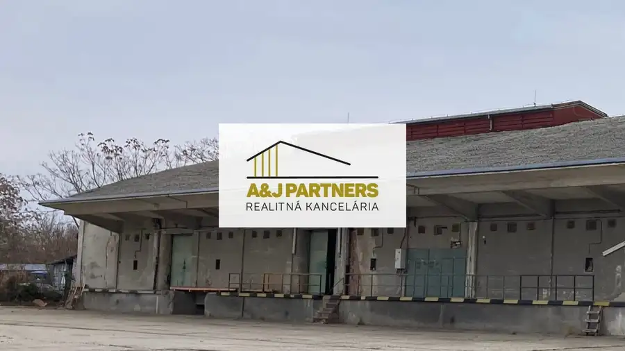
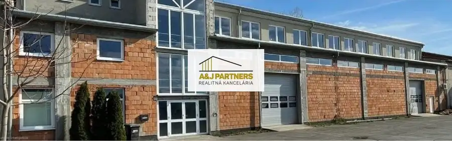
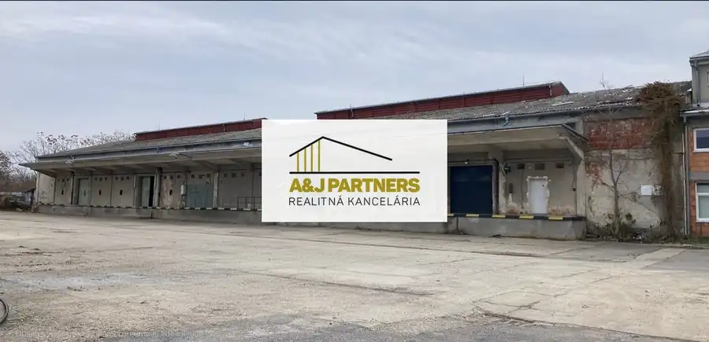

ZNÍŽENÁ CENA! Moderný 4 izbový rodinný dom SO 02 vo Vojke nad Dunajom
Vojka nad Dunajom
- Plocha109.67 m²
- StavNovostavba
- VlastníctvoOsobné
- Energetická triedaA
O nehnuteľnosti
Exkluzívne iba u nás v A&J Partners ponúkame na predaj novostavbu 4 izbového samostatne stojacieho priestranného rodinného domu v nádhernom prostredí blízko Vojčianského ramena.* Úžitková plocha domu: 109,67 m2* Zastavaná plocha domu: 166,15 m2 + 26,64 m2 terasa* Pochôdzna povala: 20 m2* Plocha pozemku: 650 m2* K rodinnému domu vedie betónová prístupová cesta, ktorá je tiež súčasťou tejto ponuky.Dispozícia domu:* Zádverie: 5,08 m2* Predsieň: 4,81 m2* Chodba: 10,05 m2* Technická miestnosť: 5,28 m2* Toaleta: 2,34 m2* Kúpeľňa: 7,33 m2* Detská izba: 12,27 m2* Spálňa: 15,77 m2* Detská izba: 12,67 m2* Obývacia izba + kuchyňa: 39,15 m2* Terasa: 26,64 m2Materiál stavby:- tehla POROTHERM 300 mm + tepelná polystyrénová izolácia 150 mm- betónová strešná krytina- tenkovrstvová silikátová vonkajšia omietkaInžinierske siete:elektrina, kanalizácia, studňa - vlastná vodáreňVyhotovenie stavby zahŕňa nasledujúci stav a materiály:- železobetónové základy,- murované nosné steny,- strecha vrátane krytiny, - kvalitná fúkaná tepelná izolácia,- omietky ,- potery,- odkvapový systém,- kúrenie - tepelným čerpadlom, podlahové teplovodné so samostatným termostatom v každej izbe- predpríprava na krb- rozvody vody komplet inštalácia- elektroinštalácia- bleskozvod- odpad a napojenie do kanalizácie- vyrovnanie terénu- vymaľovanie interiéru 2x- obklady v kúpeľni- sanita- podlahy kombinácia laminátových parkiet a keramickej dlažby- Geberit, podomietkové nádržkové systémy na WC- predpríprava na klimatizáciu, bezpečnostný systém- plastové okná 6 komorový systém s izolačným trojsklom- exteriérové žalúzie- exteriérové poplastované plechové parapety a interiérové z PVC- zásuvky a vypínače Legrand- pokládka zámkovej dlažby na chodníku od vstupnej brány po terasu, tiežparkovacieho státia- oplotenie celého pozemku- vstupná bránaLokalita nehnuteľnosti:Obec Vojka vďaka svojej polohe začína byť veľmi lukratívna a vyhľadávaná. Objavujú ju ľudia ktorí túžia po aktívnom životnom štýle v oáze pokoja obklopenej lužnými lesmi a vodami Dunaja a Dunajských ramien s veľmi dobrou dostupnosťou do Bratislavy (30 km), Šamorína (10 km) cez kompu a Dunajskej Stredy (20 km).Sú tu možnosti aktívneho športovania plávanie, člnkovanie, tenis, detské ihrisko, volejbal, bicyklovanie po hrádzi, korčuľovanie, rybolov, beh, splavovanie ramien Dunaja, jazda na koni.Dom sa predáva vo vyhotovení STANDARD.Cena nehnuteľnosti je 265 000,- € vrátane provízie RK.Možnosť financovania cez HU.Klientom ponúkame bezplatný hypotekárny servis – poradenstvo a realizácia celého hypotekárneho procesu od zabezpečenia najvýhodnejšej ponuky až po uzavretie úverovej zmluvy.V rámci provízie zabezpečujeme pre našich klientov kompletný servis od uskutočnenia obhliadky až po odovzdanie nehnuteľnosti, vrátane právneho servisu.V prípade záujmu o bližšie informácie a obhliadku som Vám k dispozícii aj cez víkendy na tel.čísle. 0904 638 725, prípadne mailom a.duranska@ajpartners.skTeším sa na Vás
Parametre
| Druh | Rodinný dom |
|---|---|
| Dátum zverejnenia | 7. 10. 2025 |
| Energetický certifikát budovy | A |
| Plocha pozemku | 650 m² |
| Plocha terasy v m2 | 26.64 m² |
| Počet izieb / miestností | 4 |
| Počet nadzemných podlaží | 1 |
| Stav nehnuteľnosti | Novostavba |
| Typ | Predaj |
| Typ konštrukcie | Iná |
| Vlastníctvo | Osobné |
| Vybavenie | Terasa |
| Vykurovanie | Ústredné |
| Zastavaná plocha | 193 m² |
| Úžitková plocha | 109.67 m² |
Kde to je


Mohlo by Vás zaujímať

Komerčné priestoryNové3 440 000 €PREDAJ - výrobno-skladových priestorov v Šamoríne varianta A Šamorín 700 m² Z poverenia majiteľa ponúkame na predaj výrobno-skladové priestory v centre mesta Šamorín.K nehnuteľnosti je vstup z hľavnej cesty I. triedy z…
Komerčné priestoryNové10 1 400 000 €PREDAJ - administratívnych a výrobno-skladových priestorov v Šamoríne Šamorín 2735 m² Z poverenia majiteľa ponúkame na predaj administratívne a výrobno-skladové priestory v centre mesta Šamorín.K nehnuteľnosti je vstup z hľavnej cesty…
Komerčné priestoryNové6 780 000 €PREDAJ - výrobno-skladových priestorov v Šamoríne varianta C Šamorín 1400 m² Z poverenia majiteľa ponúkame na predaj výrobno-skladové priestory v centre mesta Šamorín.K nehnuteľnosti je vstup z hľavnej cesty I. triedy z…